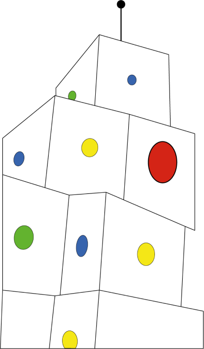
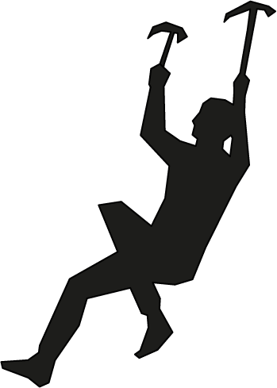

PolkUp
Juego de ascenso, giro y transformación espacial
Es un juego basado en niveles, un eje y el movimiento. Cada decisión del jugador transforma el espacio, modifica su perspectiva y redefine el recorrido hacia la cima. Con cada paso siendo uno hacia lo desconocido, lo nuevo.


CAMBIA
 TÚ DECIDES
TÚ DECIDESEL CAMINO

EJE
Todo gira en torno a un centro. El eje organiza el espacio y da sentido al movimiento

GIRO
Al girar, el jugador transforma su entorno y descubre nuevas posibilidades.


NIVELES
Cada nivel es un desafío. Ascender implica adaptarse y elegir el próximo paso

DECISIÓN
No existe un único camino. Cada decisión cambia el recorrido y redefine el horizonte

META
El objetivo está arriba, pero el camino se construye en cada movimiento.

